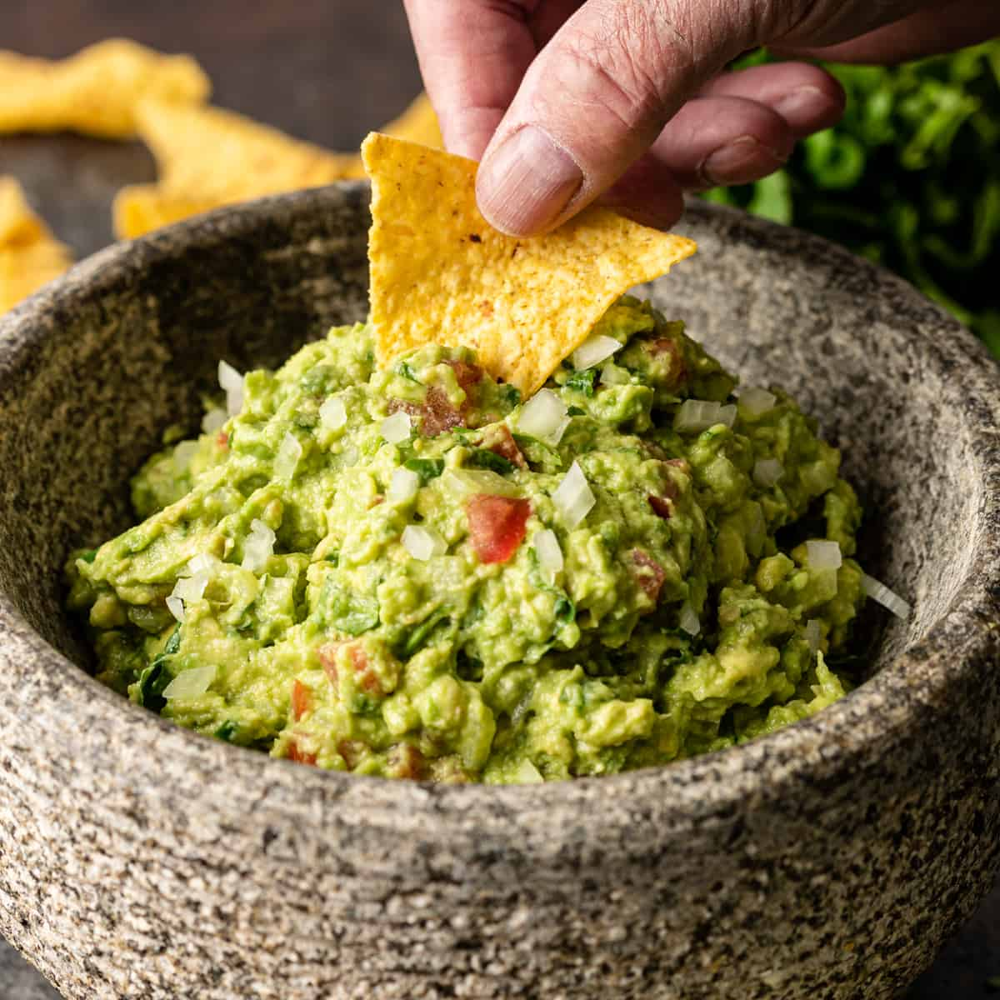

Guacamole Recipe

My favorite dip to make is a guacamole. It's suprisingly easy to make and super versatile.
Its great to eat with chips, on top of tacos or even on some toast.
Ingredients
- Avacados
- Jalapenos
- Cilantro
- Lime
- Garlic
Steps
- Mash avocados, lime juice, and salt together in a medium bowl.
- Mix in jalapenos, cilantro, and garlic.
- Serve immediately, or cover and refrigerate.